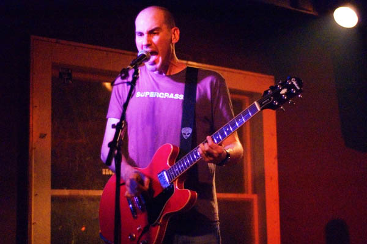

A Quick Story...
I've worked for around 20 years in basic and clinical research and specifically bone histomorphometry for the last 16 years. In my first job in research I go turned on to coding when I learned how to write macros and use conditional formating in excel. Serveral years later I found myself learning visual basic and then C#. I stopped coding for a while but kept finding myself getting drawn back to it. After spending some time learning Javascript and finding excuses to write code in my real job and spending many late nights writing hack filled code I finally realized I need to learn how to build and code the right way and I need to make it my day job. And with the love and support of my wife and daughter, here I am... and I'm freaking excited!

A little more about me and music
Writing and playing music has been a passion of mine for more than 30 years. I have been in bands from high school through my professional life. I feel lucky to actually get paid to play music but I've never broke even and probably never will. That's ok by me. I just love doing it and will never stop. Check out a few demos and my band page below if your interested.
Now that music and coding are both a big part of my life, one goal of mine is to integrate both into one project. I don't have the tools to achieve that yet but that is just one more reason I've enrolled in coding bootcamp. I honestly don't know what I'm going to do but It will be something very cool to me. If anyone else digs it, thats just gravy.